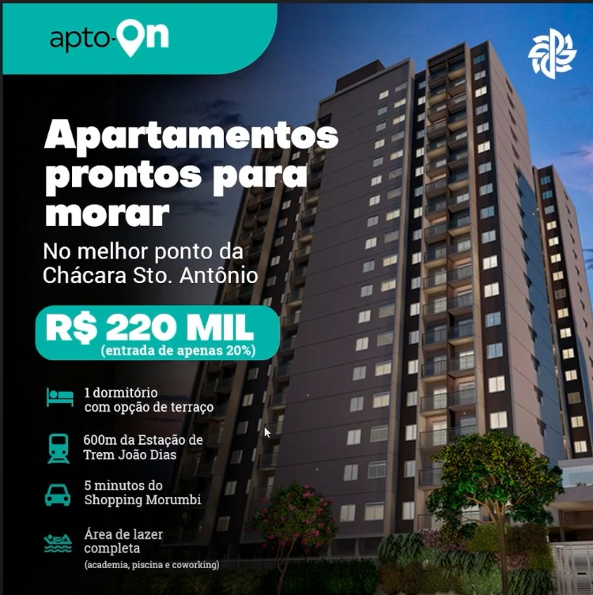
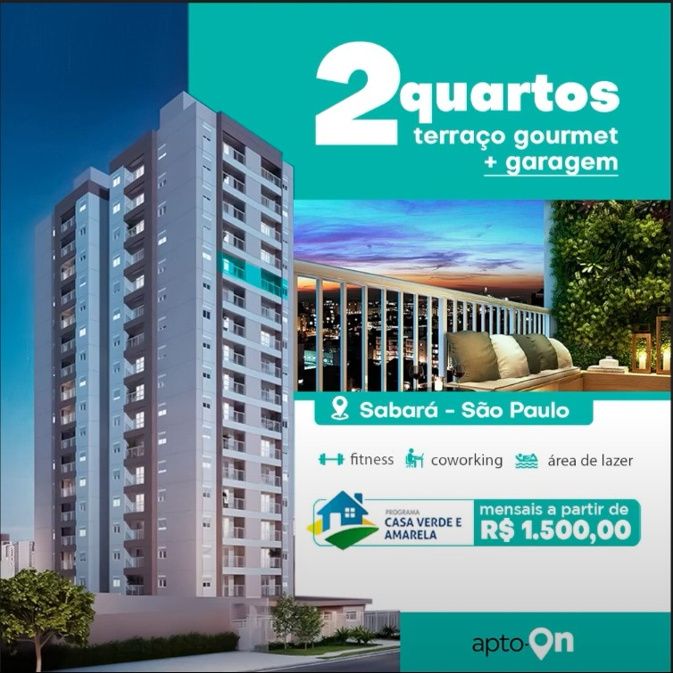
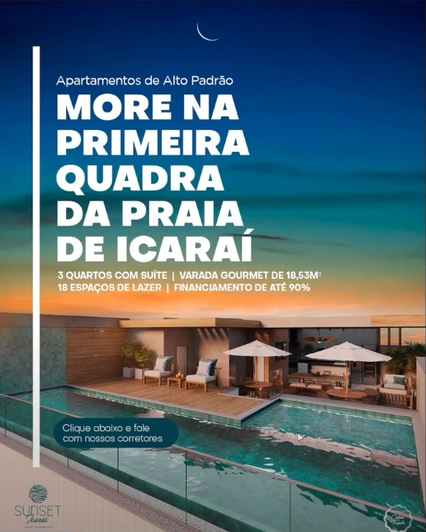
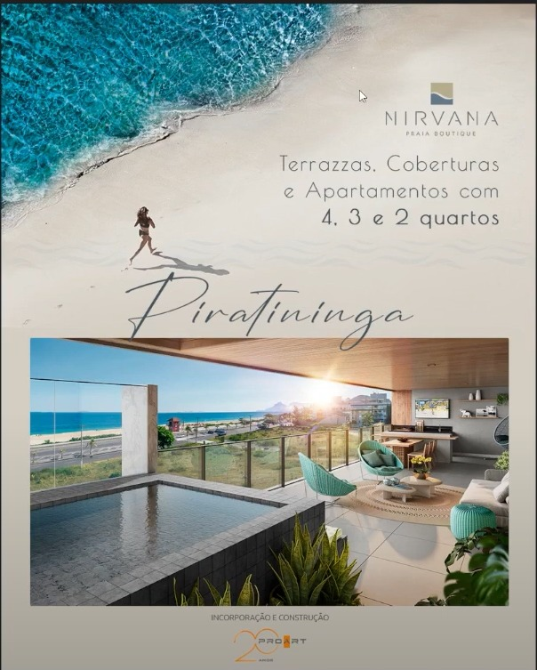
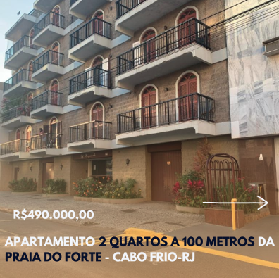

Este documento existe para uma coisa: alinhar o que é um bom anúncio de imóvel antes de gastar o primeiro real de mídia. Ele parte de anúncios reais que já rodaram no mercado — imagem e vídeo, do apartamento de R$ 220 mil à cobertura duplex no Leblon — mostra o que faz cada um funcionar, o que faz outros queimarem verba, e termina no que precisamos de vocês para produzir os nossos.
Essa é a única ideia que precisa ficar de pé antes de todas as outras. Ninguém compra um apartamento pelo celular por impulso. O que o anúncio faz é outra coisa — e entender isso muda tudo o que vamos medir depois.
Um imóvel é a maior compra da vida da maioria das pessoas. Entre ver um anúncio e assinar passam-se de 30 a 120 dias, algumas visitas, uma conversa com o banco e normalmente uma segunda pessoa da família que precisa concordar. Nenhum anúncio no mundo encurta isso.
O que o anúncio faz é produzir conversa qualificada com um corretor. Ele é o começo da esteira, não o fim. E é por isso que a régua de sucesso não pode ser curtida, alcance ou comentário — três números que não pagam comissão.
Repare em duas coisas na animação. A primeira: o anúncio aparece uma vez só, lá no começo — tudo o que decide a venda acontece depois dele, com o corretor. A segunda: o lead some no meio do caminho, e volta. Esse "sumiço" não é falha da campanha nem lead ruim; é o ciclo normal de quem está comprando a coisa mais cara da vida. Quem entende isso recupera a venda; quem não entende, apaga o contato.
"O post teve 4 mil visualizações e 80 curtidas." Isso não diz nada. Alcance é o que a plataforma entregou, não o que a pessoa sentiu. Post com muita curtida e zero conversa é custo, não resultado.
Quantos leads chegaram, quantos o corretor conseguiu falar, quantos viraram visita, quantas viraram proposta. Quatro números. É essa esteira que vamos acompanhar toda semana.
O botão "impulsionar" do Instagram entrega o post para quem tem mais chance de reagir a ele — curtir, comentar. A campanha montada no gerenciador entrega para quem tem mais chance de fazer o que você pediu: preencher um formulário, chamar no WhatsApp. É o mesmo dinheiro comprando duas coisas diferentes, e uma delas não gera cliente.
Quem preenche o formulário hoje raramente compra este mês. Isso não quer dizer que o lead é ruim: quer dizer que o ciclo é longo. Imobiliária que descarta contato que "não fechou em uma semana" está pagando para gerar cliente e entregando ele de graça para o concorrente que ligou de novo três meses depois.
É onde imobiliária mais perde dinheiro, e não custa mídia nenhuma. Um lead respondido em 5 minutos conversa; o mesmo lead respondido no dia seguinte já falou com outros três corretores. Podemos fazer o melhor anúncio deste documento inteiro — se o retorno demora seis horas, o resultado vai parecer que o anúncio é ruim.
Olhando os anúncios lado a lado, do apartamento de R$ 220 mil à cobertura duplex no Leblon, aparece a mesma estrutura de três camadas. O que separa o segmento econômico do alto padrão não é a mecânica — é qual informação ocupa o centro da peça.
A quarta camada é a que muda por segmento — e é onde a maioria erra, usando o argumento de um segmento no público de outro:
| Segmento | O que vai no centro da peça | Como soa na prática | O que não funciona aqui |
|---|---|---|---|
| Econômico | Preço e viabilidade. A dúvida real não é se o imóvel é bom — é se cabe no bolso e se o financiamento sai. | "Parcelas a partir de R$ 500" · "entrada a partir de R$ 1.000" · "ITBI + registro grátis" | Sofisticação e conceito. Peça elegante sem preço gera lead que não passa na aprovação. |
| Médio | Localização e atributo diferenciador. Já cabe no bolso; a disputa é contra outros três imóveis parecidos. | "6 min a pé do metrô Moema" · "bicicletário no mesmo andar do apartamento" · "ideal para morar ou investir" | Falar só de preço. Puxa o público para baixo e atrai quem não fecha nesse ticket. |
| Alto padrão | Exclusividade e endereço. Preço não é a objeção — a objeção é "por que este e não outro". | "Apenas 12 unidades" · "na primeira quadra de Icaraí" · "no melhor do Leblon" | Preço grande e selo de desconto. Lê como saldão e queima o produto. |
Anúncios reais, de imobiliárias e incorporadoras que investem pesado em mídia. Não é para copiar layout — é para ver a decisão por trás de cada peça. Em cada uma, o que está escrito é mais importante do que como está desenhado.

Se este documento pudesse ter um exemplo só, seria este. Ele responde, em dois segundos, todas as perguntas que a pessoa faria ao corretor no primeiro contato:
Repare no que não tem: nenhum adjetivo. Não há "excelente oportunidade", "imperdível" nem "o melhor da região". Todas as palavras da peça são verificáveis. É exatamente isso que faz o lead chegar já sabendo o que vai visitar.
Um único número ocupa metade da peça: "partir de R$ 500". É a tradução do imóvel para a moeda que o público entende — parcela mensal, não valor total. "Lançamento em Londrina" faz o recorte geográfico, e o botão "Descubra mais" é o CTA nativo do anúncio, clicável.
A variação da mesma campanha troca a parcela por localização: "More próximo aos principais pontos de lazer da cidade — a poucos minutos do aeroporto e do Shopping Boulevard", com "ITBI + registro grátis" e "última torre disponível". Mesmo empreendimento, dois argumentos diferentes, para descobrir qual puxa mais lead.

"Mensais a partir de R$ 1.500,00" com o selo do programa habitacional ao lado. O programa não é enfeite: é o que diz para a pessoa "você tem chance de ser aprovada", que é a objeção real de quem compra o primeiro imóvel.
Depois disso, os atributos: 2 quartos, terraço gourmet, garagem, fitness, coworking, área de lazer. Nessa ordem — primeiro a viabilidade, depois o desejo.
Aqui o preço some da peça — e é proposital. No médio padrão, quem lê já sabe a faixa do bairro; o que decide é outra coisa. O centro da peça vira o par metragem + localização: "27 a 41m² com terraço" e "6 min. a pé do metrô Moema".
E aparece o detalhe que ninguém mais fala: "bicicletário no mesmo andar do apartamento". É um atributo pequeno, específico e impossível de confundir com o concorrente. Um diferencial estranho e concreto vale mais que dez genéricos.
A frase "ideal para morar ou investir" abre a peça para dois públicos diferentes com o mesmo criativo — comprador final e investidor.

Compare com o apto-On e veja a inversão completa. Aqui não existe preço na peça. O que ocupa o espaço todo é o endereço, escrito como promessa: "MORE NA PRIMEIRA QUADRA DA PRAIA DE ICARAÍ". Não é "próximo à praia" — é primeira quadra, que é uma posição que ou você tem ou não tem.
Abaixo, quatro dados em uma linha só: 3 quartos com suíte · varanda gourmet de 18,53m² · 18 espaços de lazer · financiamento de até 90%. O "18,53m²" com as casas decimais é o detalhe que passa credibilidade — é medida de projeto, não estimativa de anúncio.
O financiamento aparece por último e pequeno. No econômico, condição de pagamento é o título; aqui é nota de rodapé. Mesma informação, hierarquia oposta.
E o CTA está escrito na peça: "Clique abaixo e fale com nossos corretores" — instrução direta, sem "consulte-nos".
Escassez explícita, atravessando a peça: "EXCLUSIVIDADE: EMPREENDIMENTO COM APENAS 12 UNIDADES". Doze. O número pequeno é o produto — é ele que justifica o ticket e cria pressa em quem pode pagar.
E o endereço completo no rodapé: "Rua Prof. Arthur Ramos 75, esquina com Rua General Urquiza". No alto padrão, dar a esquina exata não é excesso de informação: é o que separa quem conhece a região de quem só está passeando.
Mesma campanha da referência acima, com abertura mais conceitual: "Nada se compara… apartamentos de alto padrão na primeira quadra de Icaraí", e a foto ocupando quase tudo.
Funciona porque não vem sozinha. Peça conceitual é ótima para apresentar e alimentar remarketing, mas se for a única do conjunto o lead chega sem saber metragem nem faixa de preço — e o corretor gasta a primeira ligação explicando o que a peça deveria ter dito.

Abre com a praia vista de cima e uma pessoa correndo na areia — vende o lugar antes do imóvel. Só depois entra a perspectiva da varanda com piscina, e a informação: "Terrazzas, coberturas e apartamentos com 4, 3 e 2 quartos".
Esse é o papel legítimo da peça bonita: parar o dedo e apresentar. Ela abre a campanha; quem interage recebe depois a peça com metragem, planta e condição. Uma prepara a outra.
Estes dois são reais e estavam na mesma pasta dos bons. Não são anúncios "feios" — são anúncios que gastam mídia sem dar ao comprador nenhum motivo para agir. Vale olhar com calma, porque são os erros mais fáceis de cometer sem perceber.

O conteúdo até está certo: tem preço (R$ 490.000), tem quantidade de quartos e tem uma referência boa de localização — "a 100 metros da Praia do Forte". Isso é mais do que muita imobiliária coloca.
O que derruba é tudo o mais:
É o caso mais frustrante de todos: a informação certa jogada fora por causa da embalagem. Mesma foto, tratada, com faixa escura sob o texto e o preço destacado, já viraria uma peça aceitável.
Este é bem produzido: layout organizado, perspectiva 3D limpa, marca visível. E ainda assim é o mais fraco do conjunto — porque comunica as notícias da incorporadora, não as do comprador.
Um anúncio pode ser bonito, caro de produzir e mesmo assim não pedir nada e não informar nada.
O medo é "assustar o cliente". O que acontece na prática é o contrário: sem preço, todo mundo clica — inclusive quem nunca poderia comprar — e o corretor gasta o dia inteiro descobrindo por telefone quem tinha condição.Certo: preço cheio, "a partir de", parcela ou entrada. Qualquer um serve. Silêncio é o que não serve.
"Apartamento no Centro" não diz nada para quem não é da região. As referências boas nunca fazem isso: usam tempo e ponto conhecido — 6 minutos a pé do metrô, 600m da estação, 5 minutos do shopping.Certo: "a X minutos de [lugar que a pessoa conhece]". Distância se mede em minutos, não em metros.
Vira catálogo. Cada imóvel fala com um público, com uma faixa de preço e uma objeção diferente — juntando tudo, a plataforma não aprende com quem falar e nenhum dos dez é bem apresentado.Certo: um imóvel por anúncio; o carrossel serve para mostrar cômodos do mesmo imóvel.
É um pedido sem oferta. A pessoa não vai agendar visita para um imóvel do qual não sabe o preço, o tamanho nem onde fica.Certo: a informação primeiro, o pedido depois. "3 quartos, 92m², 5 min do centro, a partir de R$ 480 mil — fale com um corretor."
Imóvel sem móvel e mal iluminado parece menor e mais velho do que é. É o motivo nº 1 de um imóvel bom performar mal — não é o anúncio que está errado, é a matéria-prima.Certo: luz do fim da tarde, luzes internas acesas, cortina aberta, foto na horizontal do canto do cômodo. Sem móvel, vale ambientar as duas ou três fotos principais.
Queima verba e queima o corretor: o lead chega quente perguntando de um imóvel que não existe mais. E, sem exclusividade, você paga a mídia para um lead que fecha com outra imobiliária.Certo: só entram na mídia imóveis com exclusividade e disponibilidade confirmada na semana.
Quem cansou do anúncio foi a equipe, que o vê dez vezes por dia — não o público, que o viu uma. Trocar cedo demais impede a campanha de sair do aprendizado e joga fora o histórico que faz o custo por lead cair.Certo: criativo só sai quando o número mostra queda, não quando o time enjoa.
A pasta de referência já está organizada exatamente do jeito certo — cada vídeo nomeado pela função, não pelo imóvel. É assim que se monta biblioteca de criativo: o mesmo imóvel rende seis vídeos diferentes se cada um resolver uma objeção diferente.
Abaixo, dez anúncios em vídeo que rodaram de verdade — de incorporadora, de imobiliária e de corretor autônomo. Dá play em cada um e leia o que está embaixo: em todos, o que faz o vídeo funcionar é uma decisão simples que dá para copiar amanhã.
Ele anda pela cidade — praia, mercado, calçada, restaurante — e cada trecho ganha uma legenda grande na tela. Fecha com "30% abaixo do valor de mercado" e o telefone do time.
Perspectivas 3D encadeadas, com um dado técnico por cena: "198m² privativos, 3 ou 4 suítes sendo 1 master, 3 vagas", "1.200m² de lazer com mais de 10 ambientes". CTA "Cadastre-se".
Começa com drone sobre a orla e "A partir de R$ 3.149.000,00" na tela. Corta para uma pessoa falando com a câmera, com uma palavra-chave em destaque a cada frase: localização, 15%, especialistas, parcelamento em 120x.
Celular na mão, andando devagar, uma legenda por ambiente: "casa moderna com lazer em Arniqueiras", "5 banheiros ao todo", "garagem coberta para 2 carros", "varanda", "churrasqueira e piscina".
Imagem aérea do bairro inteiro antes de entrar na casa — responde "onde fica" sem escrever uma palavra. Depois, legenda por cômodo: "280m² de área útil", "acabamento de primeira qualidade", "cozinha ampla".
Tour por uma casa de alto padrão — elevador interno, piscina, closet — e, por cima de tudo, do primeiro ao último segundo: "ACEITA PERMUTA — ATÉ R$ 2.000.000,00".
Abre com a cartela do empreendimento e a ficha na tela — "191m², 3 suítes, vista panorâmica, varanda gourmet" — junto da promessa "metros quadrados em 50 segundos". Só depois o corretor percorre o apartamento.
Um corretor abre na entrada, o drone mostra o condomínio, e uma segunda corretora assume nos ambientes internos. Legendas: "um dos condomínios mais deslumbrantes", "100% mobiliada", "ambientes pensados para você".
Quase não mostra o imóvel inteiro — mostra detalhes: um livro da Rolex na estante, o tênis, o blazer, a luz rasante. As poucas informações vêm em texto curto: "3 confortáveis suítes", "closet", "conheça essa exclusividade".
Abre com "ao lado da Faria Lima" e o argumento do centro financeiro. Depois percorre salão, academia, área verde, piscina, cozinha americana, lavanderia embutida, luminosidade natural — um atributo por corte.
Resumo dos formatos e de onde cada um entra no funil — do público que nunca ouviu falar de vocês até quem já visitou o imóvel:
| Formato | Serve para | Onde entra | Por que funciona |
|---|---|---|---|
| Humanizado corretor fala com a câmera | Gerar confiança e dar rosto à imobiliária | Topo — público frio | Pessoa falando segura o dedo mais que imagem parada. E o lead já chega sabendo com quem vai falar. |
| Animação 3D atributos e áreas de lazer | Mostrar o produto que ainda não existe | Meio — quem já demonstrou interesse | Em lançamento é a única forma de mostrar o imóvel pronto. Vende a planta. |
| Humanizado + animação intercalado | Confiança e produto no mesmo vídeo | Topo e meio | Costuma ser o formato mais forte do conjunto: o rosto prende, a animação convence. |
| Tour com legenda por cômodo | Passear pelo imóvel sem depender de áudio | Meio e remarketing | A maioria assiste sem som. Legenda por cômodo entrega a informação mesmo mudo. |
| Tour com drone | Mostrar entorno, vista e posição na cidade | Abertura de campanha | Resolve a pergunta de localização em três segundos, sem precisar escrever. |
| Tour com condição de pagamento | Quebrar a objeção de dinheiro | Fundo — quem já viu o imóvel | Última barreira antes da visita. É o vídeo que mais gera conversa no econômico. |
| Tour em 50s | Versão curta para Reels e Stories | Todo lugar | Formato vertical curto tem a mídia mais barata. Corte do tour longo, não gravação nova. |
| Corretor apresenta / time de corretores | Prova social e captação de novos imóveis | Topo e institucional | Mostra estrutura. Serve também para atrair proprietário querendo vender — a outra ponta do negócio. |
O vídeo é decidido no primeiro frame e nos 3 primeiros segundos. Comece pela melhor imagem do imóvel ou por uma frase de impacto. Nunca comece com logo, vinheta ou "olá, tudo bem, meu nome é…" — nesse tempo a pessoa já rolou.
Grave em pé (9:16). Vídeo horizontal aparece pequeno no meio da tela do celular e perde para qualquer vídeo vertical do lado. Se só existir a versão horizontal, cortamos — mas nasce perdendo.
Esta é a parte que depende de vocês, e é a que mais determina o resultado. Não existe anúncio bom de imóvel mal captado. Abaixo, o pacote mínimo — vale como checklist para o corretor levar na visita de captação.
Vocês trabalham com três frentes — lançamento de construtora, carteira própria e alto padrão. São públicos, argumentos e ciclos diferentes, e por isso não podem dividir a mesma campanha: se rodarem juntas, a plataforma otimiza para a que gera lead mais barato, que quase sempre é a errada.
Verba concentrada e prazo curto — lançamento tem janela. Campanha de geração de lead com formulário, criativos puxando condição de pagamento (parcela, entrada, ITBI/registro) e estágio da obra. Vídeo de animação 3D e humanizado intercalado como criativo principal. É a frente que mais gera volume, e a que mais exige velocidade de atendimento — em lançamento o lead compara três empreendimentos na mesma tarde.
Verba distribuída e contínua. Aqui a regra é um imóvel por anúncio, com os 4 dados na peça, rodando só os imóveis com exclusividade. O objetivo não é gerar o lead mais barato — é gerar o lead do imóvel certo. Roda também a ponta de captação: anúncio falando com o proprietário que quer vender, usando os vídeos de "corretor apresenta" e "time de corretores". Sem estoque, a frente de venda seca.
Verba menor, lead mais caro e menos leads de propósito. Aqui um lead custa várias vezes o do econômico e isso está certo — o que importa é a qualidade, não o volume. Criativo conceitual para abrir (vista, endereço, exclusividade), peça com metragem e diferencial para quem interagiu. Nunca preço grande na peça. Público montado por região e comportamento, não por faixa de renda declarada.
É a frente mais barata e a que ninguém faz. Quem assistiu 50% do vídeo, quem visitou o site, quem abriu o formulário e não terminou: essas pessoas já demonstraram interesse e custam uma fração para impactar de novo. Como o ciclo do imóvel é longo, é o remarketing que recupera o lead de março que só vai decidir em junho.
| O que acompanhamos toda semana | O que o número quer dizer | De quem é a responsabilidade |
|---|---|---|
| Leads gerados | Volume que a mídia entregou | Cardô |
| Custo por lead | Eficiência do criativo e do público | Cardô |
| % de leads contatados | Se a esteira comercial está absorvendo o que chega | Imobiliária |
| Tempo até o 1º contato | O número que mais mexe na conversão inteira | Imobiliária |
| Visitas agendadas | Se o lead está chegando qualificado | Compartilhada |
| Propostas / vendas | O único resultado que importa de fato | Compartilhada |
Este documento cobre o critério. Para virar cronograma e distribuição de verba, faltam cinco definições — todas de vocês.